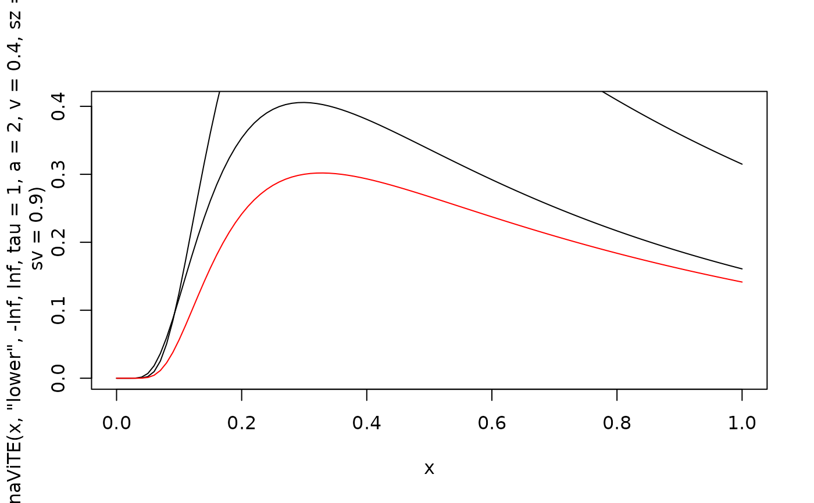
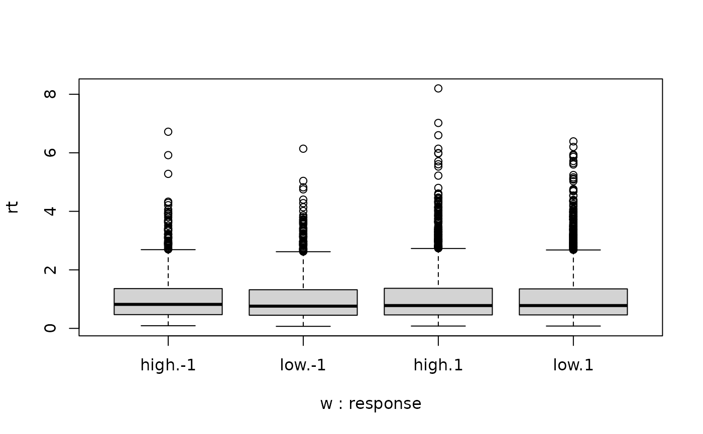
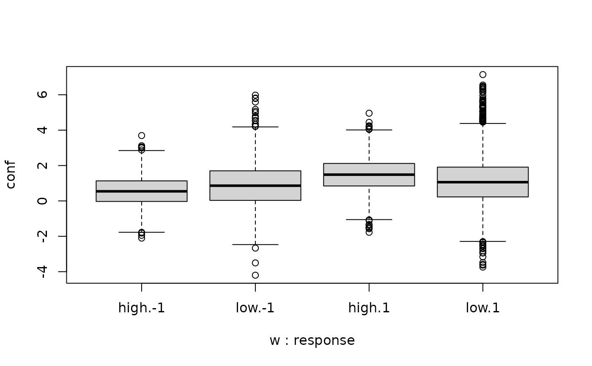

Dynamical visibility, time, and evidence model (dynaViTE) and Dynamical weighted evidence and visibility model (dynWEV)
Source:R/dWEV.R
dynaViTE.RdLikelihood function and random number generator for the dynaViTE and dynWEV model
(Hellmann et al., 2023).
It includes following parameters from the drift diffusion model:
a (threshold separation),
z (starting point; relative),
v (drift rate),
t0 (non-decision time/response time constant),
d (differences in speed of response execution),
sv (inter-trial-variability of drift),
st0 (inter-trial-variability of non-decisional components),
sz (inter-trial-variability of relative starting point) and
s (diffusion constant).
For the computation of confidence following parameters were added:
tau (post-decisional accumulation time),
w (weight on the decision evidence (weight on visibility is (1-w))),
muvis (mean drift rate of visibility process),
svis (diffusion constant of visibility process),
sigvis (variability in drift rate of visibility accumulator),
th1 and th2 (lower and upper thresholds for confidence interval).
lambda for dynaViTE only, the exponent of judgment time for the division by judgment time in the confidence measure, and
Note that the parametrization or defaults of non-decision time variability
st0 and diffusion constant s differ from what is often found in the literature.
Usage
dWEV(rt, response = "upper", th1, th2, a, v, t0 = 0, z = 0.5, d = 0,
sz = 0, sv = 0, st0 = 0, tau = 1, w = 0.5, muvis = NULL,
sigvis = 0, svis = 1, lambda = 0, s = 1, simult_conf = FALSE,
precision = 1e-05, z_absolute = FALSE, stop_on_error = TRUE,
stop_on_zero = FALSE)
rWEV(n, a, v, t0 = 0, z = 0.5, d = 0, sz = 0, sv = 0, st0 = 0,
tau = 1, w = 0.5, muvis = NULL, sigvis = 0, svis = 1, lambda = 0,
s = 1, delta = 0.01, maxrt = 15, simult_conf = FALSE,
z_absolute = FALSE, stop_on_error = TRUE, process_results = FALSE)Arguments
- rt
a vector of RTs. Or for convenience also a
data.framewith columnsrtandresponse.- response
character vector, indicating the decision, i.e. which boundary was met first. Possible values are
c("upper", "lower")(possibly abbreviated) and"upper"being the default. Alternatively, a numeric vector with values 1=lower and 2=upper or -1=lower and 1=upper, respectively. For convenience,responseis converted viaas.numericalso allowing factors. Ignored if the first argument is adata.frame.- th1
together with
th2: scalars or numerical vectors giving the lower and upper bound of the interval of the confidence measure (see Details). Only values withth2>=th1are accepted.- th2
(see
th1)- a
threshold separation. Amount of information that is considered for a decision. Large values indicate a conservative decisional style. Typical range: 0.5 <
a< 2- v
drift rate of decision process. Average slope of the information accumulation process. The drift gives information about the speed and direction of the accumulation of information. Large (absolute) values of drift indicate a good performance. If received information supports the response linked to the upper threshold the sign will be positive and vice versa. Typical range: -5 <
v< 5- t0
non-decision time or response time constant (in seconds). Lower bound for the duration of all non-decisional processes (encoding and response execution). Typical range: 0.1 <
t0< 0.5. Default is 0.- z
(by default relative) starting point of decision process. Indicator of an a priori bias in decision making. When the relative starting point
zdeviates from0.5, the amount of information necessary for a decision differs between response alternatives. Default is0.5(i.e., no bias).- d
differences in speed of response execution (in seconds). Positive values indicate that response execution is faster for responses linked to the upper threshold than for responses linked to the lower threshold. Typical range: -0.1 <
d< 0.1. Default is 0.- sz
inter-trial-variability of starting point. Range of a uniform distribution with mean
zdescribing the distribution of actual starting points from specific trials. Values different from 0 can predict fast errors (but can slow computation considerably). Typical range: 0 <sz< 0.2. Default is 0. (Given in relative range i.e. bounded by 2*min(z, 1-z))- sv
inter-trial-variability of drift rate of decision process. Standard deviation of a normal distribution with mean
vdescribing the distribution of actual drift rates from specific trials. Values different from 0 can predict slow errors. Typical range: 0 <sv< 2. Default is 0.- st0
inter-trial-variability of non-decisional components. Range of a uniform distribution with mean
t0 + st0/2describing the distribution of actualt0values across trials. Accounts for response times belowt0. Reduces skew of predicted RT distributions. Values different from 0 can slow computation considerably. Typical range: 0 <st0< 0.2. Default is 0.- tau
post-decisional accumulation time; the length of the time period after the decision was made until the confidence judgment is made. Range:
tau>0. Default:tau=1.- w
weight put on the final state of the decision accumulator for confidence computation. 1-w is the weight on the visibility accumulator. Range: 0<
w<1. Default:w=0.5.- muvis
mean drift of visibility process. If
NULL(default),muviswill be set to the absolute value ofv.- sigvis
the variability in drift rate of the visibility process (which varies independently from the drift rate in decision process). Range:
sigvis>=0. Default:sigvis=0.- svis
diffusion constant of visibility process. Range:
svis>0. Default:svis=1.- lambda
power for judgment time in the division of the confidence measure by the judgment time (Default: 0, i.e. no division which is the version of dynWEV proposed by Hellmann et al., 2023)
- s
diffusion constant of decision process; standard deviation of the random noise of the diffusion process (i.e., within-trial variability), scales other parameters (see Note). Needs to be fixed to a constant in most applications. Default is 1. Note that the default used by Ratcliff and in other applications is often 0.1.
- simult_conf
logical. Whether in the experiment confidence was reported simultaneously with the decision. If that is the case decision and confidence judgment are assumed to have happened subsequent before the response. Therefore
tauis included in the response time. If the decision was reported before the confidence report,simul_confshould beFALSE.- precision
numerical scalar value. Precision of calculation. Corresponds to the step size of integration w.r.t.
zandt0. Default is 1e-5.- z_absolute
logical. Determines whether
zis treated as absolute start point (TRUE) or relative (FALSE; default) toa.- stop_on_error
Should the diffusion functions return 0 if the parameters values are outside the allowed range (=
FALSE) or produce an error in this case (=TRUE).- stop_on_zero
Should the computation of densities stop as soon as a density value of 0 occurs. This may save a lot of time if the function is used for a likelihood function. Default: FALSE
- n
integer. The number of samples generated.
- delta
numeric. Discretization step size for simulations in the stochastic process
- maxrt
numeric. Maximum decision time returned. If the simulation of the stochastic process exceeds a decision time of
maxrt, theresponsewill be set to 0 and themaxrtwill be returned asrt.- process_results
logical. Whether the output simulations should contain the final state of the decision (and visibility) process as additional column. Default is FALSE, meaning that no additional columns for the final process states are returned.
Value
dWEV gives the density/likelihood/probability of the diffusion process producing
a decision of response at time rt and a confidence judgment corresponding to the
interval [ th1, th2]. The value will be a numeric vector of the same length as
rt.
rWEV returns a data.frame with three columns and n rows. Column names are rt (response
time), response (-1 (lower) or 1 (upper), indicating which bound was hit), and conf (the
value of the confidence measure; not discretized!).
The distribution parameters (as well as response, tau, th1 and th2,
w and sig) are recycled to the length of the result. In other words, the functions
are completely vectorized for all parameters and even the response boundary.
Details
The dynamical visibility, time, and evidence (dynaViTE) model
and the weighted evidence and visibility model are extensions of the 2DSD model
for decision confidence (see d2DSD). It assumes that the decision follows a drift
diffusion model with two additional assumptions to account for confidence. First, there is a
post-decisional period of further evidence accumulation tau. Second, another accumulation process
accrues information about stimulus reliability (the visibility process) including also evidence
about decision irrelevant features. See Hellmann et al. (2023) for more information.
The measure for confidence is then a weighted sum of the final state of the decision process X
and the visibility process V over a power-function of total accumulation time,
i.e. for a decision time T (which is not the response time), the confidence variable is
$$conf = \frac{wX(T+\tau) + (1-w) V(T+\tau)}{(T+\tau)^\lambda}.$$
The dynWEV model is a special case of dynaViTE, with the parameter lambda=0.
All functions are fully vectorized across all parameters as well as the response to match the
length or rt (i.e., the output is always of length equal to rt). This allows for
trial wise parameters for each model parameter.
For convenience, the function allows that the first argument is a data.frame containing
the information of the first and second argument in two columns (i.e., rt and response).
Other columns (as well as passing response separately argument) will be ignored.
Note
The parameterization of the non-decisional components, t0 and st0,
differs from the parameterization sometimes used in the literature.
In the present case t0 is the lower bound of the uniform distribution of length
st0, but not its midpoint. The parameterization employed here is in line
with the functions in the rtdists package.
The default diffusion constant s is 1 and not 0.1 as in most applications of
Roger Ratcliff and others. Usually s is not specified as the other parameters:
a, v, sv, muvis, sigvis, and svis respectively,
may be scaled to produce the same distributions (as is done in the code).
The function code is basically an extension of the ddiffusion function from the
package rtdists for the Ratcliff diffusion model.
References
Hellmann, S., Zehetleitner, M., & Rausch, M. (2023). Simultaneous modeling of choice, confidence and response time in visual perception. Psychological Review 2023 Mar 13. doi: 10.1037/rev0000411. Epub ahead of print. PMID: 36913292.
Examples
# Plot rt distribution ignoring confidence
curve(dWEV(x, "upper", -Inf, Inf, tau=1, a=2, v=0.4, sz=0.2, sv=0.9), xlim=c(0, 2), lty=2)
curve(dWEV(x, "lower", -Inf, Inf,tau=1, a=2, v=0.4, sz=0.2, sv=0.9), col="red", lty=2, add=TRUE)
curve(dWEV(x, "upper", -Inf, Inf, tau=1, a=2, v=0.4),add=TRUE)
curve(dWEV(x, "lower", -Inf, Inf, tau=1, a=2, v=0.4), col="red", add=TRUE)
# Generate a random sample
df1 <- rWEV(5000, a=2,v=0.5,t0=0,z=0.5,d=0,sz=0,sv=0, st0=0, tau=1, s=1, w=0.9)
# Same RT and response distribution but different confidence distribution
df2 <- rWEV(5000, a=2,v=0.5,t0=0,z=0.5,d=0,sz=0,sv=0, st0=0, tau=1, s=1, w=0.1)
head(df1)
#> rt response conf
#> 1 0.53 -1 0.8269037
#> 2 1.24 1 1.9609056
#> 3 0.49 1 1.0684876
#> 4 1.36 1 1.0214468
#> 5 1.43 1 1.5037866
#> 6 0.13 -1 -0.5690482
# Scaling diffusion parameters leads do same density values
dWEV(df1[1:5,], th1=-Inf, th2=Inf, a=2, v=.5)[1:5]
#> [1] 0.2281273 0.2401797 0.6495815 0.2040477 0.1855356
s <- 2
dWEV(df1[1:5,], th1=-Inf, th2=Inf, a=2*s, v=.5*s, s=2)[1:5]
#> [1] 0.2281273 0.2401797 0.6495815 0.2040477 0.1855356
# Diffusion constant also scales confidence parameters
dWEV(df1[1:5,], th1=0.2, th2=1, a=2, v=.5, sv=0.2, w=0.5, sigvis = 0.2, svis = 1)[1:5]
#> [1] 0.08739481 0.05910101 0.20121202 0.04854987 0.04330330
s <- 2
dWEV(df1[1:5,], th1=0.2*s, th2=1*s, a=2*s, v=.5*s, s=2,
sv=0.2*s, w=0.5, sigvis=0.2*s, svis=1*s)[1:5]
#> [1] 0.08739481 0.05910101 0.20121202 0.04854987 0.04330330
two_samples <- rbind(cbind(df1, w="high"),
cbind(df2, w="low"))
# no difference in RT distributions
boxplot(rt~w+response, data=two_samples)

# but different confidence distributions
boxplot(conf~w+response, data=two_samples)

if (requireNamespace("ggplot2", quietly = TRUE)) {
require(ggplot2)
ggplot(two_samples, aes(x=rt, y=conf))+
stat_density_2d(aes(fill = after_stat(density)), geom = "raster", contour = FALSE) +
xlim(c(0, 2))+ ylim(c(-1.5, 4))+
facet_grid(cols=vars(w), rows=vars(response), labeller = "label_both")
}
#> Warning: Removed 1224 rows containing non-finite values (`stat_density2d()`).
#> Warning: Removed 1584 rows containing missing values (`geom_raster()`).

# Restricting to specific confidence region
df1 <- df1[df1$conf >0 & df1$conf <1,]
dWEV(df1[1:5,], th1=0, th2=1, a=2, v=0.5)[1:5]
#> [1] 0.10602717 0.22777846 0.06612393 0.05001052 0.25075448
# If lower confidence threshold is higher than the upper, the function throws an error,
# except when stop_on_error is FALSE
dWEV(df1[1:5,], th1=1, th2=0, a=2, v=0.5, stop_on_error = FALSE)
#> error: invalid parameter combination th1 = 1, th2 = 0
#> error: invalid parameter combination th1 = 1, th2 = 0
#> [1] 0 0 0 0 0